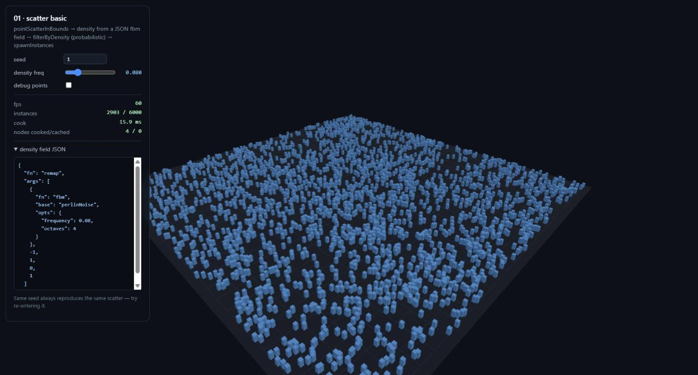
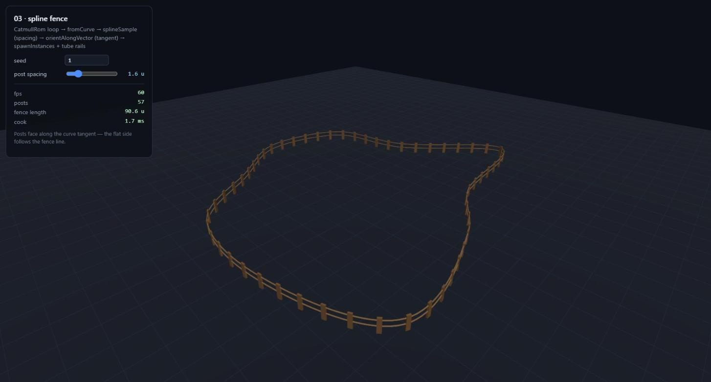
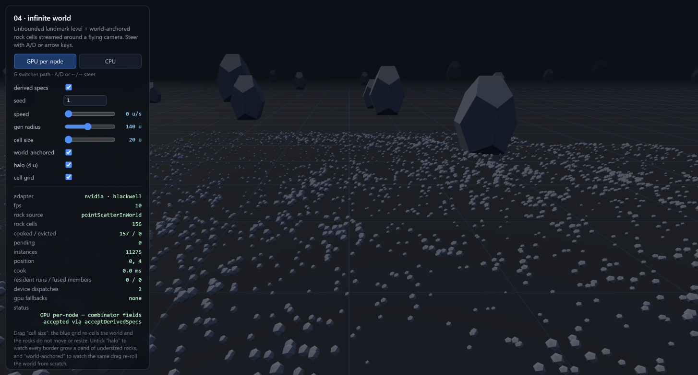

Orientation
What this manual is
pcg-ts turns seeded node graphs into content: scattered points, filtered sets, instanced geometry, streamed worlds. It runs in the browser and in Node, has no required dependencies, and is deterministic by construction — the same graph and the same seed produce byte-identical output across runs, platforms, cook orders, and streaming paths.
The manual has two genuine halves, and they are meant to be read separately. Part I is for a person building a world: install, the mental model, the renderer adapter, a tour of the eight live demos, the GPU path, and how to debug a graph that is not doing what you meant. Part II is for an LLM or agent driving the library programmatically: discovering what exists at runtime, emitting graphs as JSON, treating error strings as an API, and closing the loop with introspection and mutation.
Every API name, signature, parameter and code sample below was executed against the published build before it was written down. Numbers quoted from a run (survivor counts, cook stats, hashes, error strings) are real output, not illustrations — with the exception of wall-clock timings, which vary by machine.
docs/nodes.md is the generated node reference and docs/nodes.json the same metadata machine-readable; docs/authoring.md is the format spec with recipes; llms.txt is the compact agent capability map. All four are generated from or checked against the registry. This manual explains why and when; those explain exactly what.
Chapter 1
Install and the first cook
The core package has zero dependencies. The renderer adapter needs three.js as an optional peer dependency; the WebGPU path needs nothing extra in a browser, and Dawn bindings in Node.
# the library
npm install pcg-ts
# optional: only if you use the pcg-ts/three adapter
npm install three
# optional: only for WebGPU cooking under Node (browsers need nothing)
npm install -D webgpuNode 18 or newer, or any modern browser bundler. ESM only — there is no CommonJS build.
A graph that cooks
A graph is built in code by adding node instances, connecting typed pins, declaring which pins are terminal outputs, and then cooking. Cooking is pull-based: it walks back from the declared outputs and evaluates only what they need.
import {
Graph, cook, firstGeometry,
pointScatterInBounds, jitterPoints,
fbm, perlinNoise, remap,
} from "pcg-ts";
const graph = new Graph(42); // graph seed; every node seed derives from it
const scatter = graph.add(pointScatterInBounds, {
count: 500,
boundsMin: [0, 0, 0],
boundsMax: [50, 0, 50],
});
// `amount` is field-capable: this scalar noise is evaluated per point
// and broadcasts across all three axes.
const jitter = graph.add(jitterPoints, {
amount: remap(fbm(perlinNoise, { seed: 7, frequency: 0.05 }), -1, 1, 0, 1),
});
graph.connect(scatter, "out", jitter, "in");
graph.output(jitter, "out", "points");
const result = await cook(graph);
const geo = firstGeometry(result.outputs.points);
if (!geo) throw new Error("no geometry");
const P = geo.attrs.point.require("P"); // f32 column, 3 components per point
console.log(geo.pointCount, [...P.data.subarray(0, 3)]);
console.log(result.stats);Actual output
500 [ 33.082, -0.3688, 6.8829 ]
{ cooked: 2, cached: 0, elapsedMs: 6.69 }Cook the same graph again and both nodes are served from the memo cache — { cooked: 0, cached: 2 }. Change one parameter with graph.setParam(scatter, "count", 1000) and only that node and everything downstream of it recooks. Nothing else moves; nothing is deep-hashed.
Two details worth internalising immediately. First, the second argument to graph.add is a partial parameter object — anything you omit takes its schema default, and the defaults are published in the registry, not hidden in the source. Second, result.outputs.points is a collection of data items, not a single geometry: firstGeometry is the convenience accessor for the common case where you know there is exactly one.
Chapter 2
The mental model
Five ideas carry the whole library. If you hold these, the rest of the API reads as consequences rather than vocabulary.
2.1 · Domains and attributes
Content lives in a Geometry, and a geometry is four domains of named typed-array columns: point, vertex, primitive, and detail (always exactly one element — the place for per-geometry facts). Columns are struct-of-arrays: one Float32Array per attribute, not one object per point. That is not an optimisation detail you can ignore, it is the shape of the data you will read.
An attribute has a name, an element type (f32, i32, u32, bool, string) and a tuple size (1 = scalar, 3 = vector, 4 = colour or quaternion). A freshly scattered point cloud carries the standard set:
| Attribute | Type | Tuple | Meaning |
|---|---|---|---|
P | f32 | 3 | Position in world space. |
rot | f32 | 4 | Orientation quaternion, xyzw order. |
scale | f32 | 3 | Per-axis scale. |
density | f32 | 1 | The channel the density filters read. |
boundsMin / boundsMax | f32 | 3 | Per-point extents, for bounds filters. |
color | f32 | 4 | RGBA. |
seed | u32 | 1 | The point's own seed — its slice of the hash chain. |
Attributes move between domains rather than being recomputed. promoteAttribute walks the topology (first / average / sum / min / max) to lift or lower a value; transferAttribute copies from a second geometry by nearest source point, by barycentric lookup in the source triangulation's UV space, or by raycast against the source mesh. Everything else — filters, spawners, the renderer adapter — reads these same columns, which is why "write an attribute, then act on it" is the dominant idiom in every graph you will build.
2.2 · Fields: values that resolve late
A Field<T> is a deferred computation. It is not a number; it is a description of how to produce one column of numbers once it knows a geometry, a domain and a seed. Field-capable node parameters accept T | Field<T>, so the same slot takes 0.5 or a four-octave noise expression, and the node does not care which.
Fields compose before any geometry exists. Inputs (position(), attribute(name), index(), randomField(key)), arithmetic and comparison combinators, the full trig set, clamp/lerp/remap/select/ramp, vector operations, and five noise families all return fields.
import { createPointCloud, capture, attribute, clamp, add, mul, worleyNoise } from "pcg-ts";
// density = clamp(0.2 + worley * 0.9, 0, 1) — still just a description.
const density = clamp(add(0.2, mul(worleyNoise({ frequency: 0.15 }), 0.9)), 0, 1);
const geo = createPointCloud(1000);
const name = capture(geo, "point", density); // evaluates, stores as "__anon_0"
const col = attribute(name).evaluate({ geo, domain: "point", seed: 0 });
// col.data.length === 1000, col.tupleSize === 1capture is how an intermediate result becomes an anonymous attribute you can read back later — useful when a value is expensive and consumed twice. Raw numbers and tuples coerce to constants wherever a field is accepted, and scalars broadcast against tuples, so you never write constant(0.5) by hand.
An evaluated Column may alias live attribute storage. Treat it as read-only, and re-evaluate with a fresh EvalContext after mutating or resizing the geometry. Likewise, a CookResult aliases live cache internals — call cloneGeometry before you change anything in it, or you will corrupt the cache silently.
Noise, and knowing its range
Every noise field takes normalized: true, which affinely remaps its documented raw range to exactly [0, 1] — the cleanest way to feed a density channel. The raw ranges are machine-readable rather than folklore: NOISE_RAW_RANGES per noise type, and noiseOutputRange(field) per field instance, which is fBm-aware. A four-octave Perlin fBm reports [-1.875, 1.875], because the octave sum is not renormalised. Worley additionally takes exact: true to widen its cell search until provably correct, for when the fast approximation's rare artifacts matter.
2.3 · Graphs, cooking, and the cache
Validation is eager: bad pin names, kind mismatches and cycles throw at connect time, naming the node and pin. Pin kinds are geometry, value, instances and any; an input marked multi concatenates everything connected to it, in connection order.
Each node memoizes on exactly four things: node type, a structural hash of its parameters, its derived seed, and the revision ids of its input items. Data items carry monotonically assigned rev numbers, so geometry is never deep-hashed — an unchanged upstream output keeps its rev, and cleanliness propagates downstream for free.
- cook(graph)
- Cooks every declared output. Returns
{ outputs, stats }wherestatsis{ cooked, cached, elapsedMs }. - cook(graph, { budgetMs })
- Yields to the event loop between nodes once the budget elapses. Cooking always completes; it just shares the thread instead of blocking a frame.
- cook(graph, { signal })
- Rejects with
CookCancelledError. Nodes that finished keep their caches, so the next cook resumes where the cancelled one stopped. - cook(graph, { outputs: ["a"] })
- Cooks only the named outputs' upstream subgraph. Everything else is untouched and keeps its caches — this is what makes staged pipelines fit in one graph: cook an early output, bind data derived from it, cook the rest.
- subgraphNode(inner, inputs, outputs)
- Wraps an entire graph as one node with its own persistent inner caches. The inner seed derives from the outer node's seed, so two instances of the same subgraph produce different but reproducible content.
Per-output cooking is worth a concrete trace. Given scatter → jitter → spawn with both points (on jitter) and instances (on spawn) declared:
await cook(graph, { outputs: ["points"] }); // { cooked: 2, cached: 0 }
await cook(graph); // { cooked: 1, cached: 2 }The spawner is the only thing left to do. The partial cook also returns a partial outputs object — its keys are exactly the outputs you asked for.
2.4 · The streaming World
A World streams grid cells around a moving viewpoint. Levels are ordered coarse to fine, one graph per level, and each cell is cooked independently with a seed hashed from the world seed, the level index and every cell coordinate.
import { Graph, World, pointScatterInBounds, spawnInstances } from "pcg-ts";
const level = new Graph();
const scatter = level.add(pointScatterInBounds, { count: 200 });
const spawn = level.add(spawnInstances, { assetId: "tree" });
level.connect(scatter, "out", spawn, "in");
level.output(spawn, "instances", "instances");
const world = new World({
seed: 1234,
levels: [{
name: "props",
cellSize: 32, // world units per cell, XZ plane
generationRadius: 96, // a cell cooks when its centre enters this radius
graph: level,
bind(graph, ctx) {
// The ONLY channel through which cell data enters the graph.
// Contract: derive params only from ctx, and wire ctx.seed into
// every stochastic node.
graph.setParam(scatter, "boundsMin", [ctx.min[0], 0, ctx.min[1]]);
graph.setParam(scatter, "boundsMax", [ctx.max[0], 0, ctx.max[1]]);
graph.setParam(scatter, "seed", ctx.seed);
},
}],
onCellReady: (level, coord, outputs) => {/* hand outputs to the renderer */},
onCellEvicted: (level, coord) => {/* tear down renderer state */},
});
// Per frame, or on movement. Overlapping calls are serialized.
await world.update([camera.x, camera.y, camera.z], { budgetMs: 8 });update resolves to { cooked, evicted, pending, elapsedMs }, where cooked and evicted are arrays of { level, coord } — enough to drive a renderer without a separate bookkeeping layer. Cells cook nearest-first; eviction uses a retainRadius (default 1.25× the generation radius) plus LRU, so a viewpoint hovering on a boundary does not thrash.
The determinism claim here is stronger than "the same seed gives the same world". Cell content is a pure function of (world seed, level, coordinate, graph, parent cell content) — never of cook order, viewpoint path, or eviction history. Fly away and back and the identical cells return, because they were never a function of how you got there. The contract you owe in exchange is narrow: derive parameters only from ctx, and route ctx.seed into anything stochastic. Setting per-node seed parameters and calling graph.setSeed(...) inside bind are both sanctioned; bind-time writes are not counted as user edits, so neither causes phantom recooks.
Levels use square XZ cells by default. cellMode: "xyz" switches a level to cube cells addressed [cx, cy, cz], with radii measured in full XYZ distance. A leading cellSize: "unbounded" level covers the world with a single global cell and needs no radius — the natural home for landmarks and anything global. Lower levels see their parent cell's outputs through ctx.parent, typically injected via a dataInput node, and a parent recook marks its children stale automatically.
2.5 · Spawners: the render-agnostic terminal
The core never imports a renderer. The boundary is spawnInstances, a terminal node that converts points into instance batches: an asset id, a count, and a flat Float32Array of 4×4 column-major transforms composing T(P) · R(rot) · S(scale). A thousand points become one batch of sixteen thousand floats, and it is up to the adapter what to do with them.
// From a real cook of a 1008-point cloud:
batch.assetId // "rock"
batch.count // 1008
batch.transforms // Float32Array(16128)
batch.transforms.subarray(0, 16)
// [ 1, 0, 0, 0, 0, 1, 0, 0, 0, 0, 1, 0, 98.143, 0, 94.491, 1 ]Multi-asset spawning stays declarative rather than becoming a loop in your application. Write a per-point string attribute with setAttribute (type: "string", a values list, and a field-capable numeric selector that indexes into it) and name that attribute in the spawner's assetAttr. The output then splits into one batch per asset id, in first-occurrence order. The selector is total: it floors, clamps into range, and maps NaN to zero, so weighting by repetition (["pine", "pine", "birch", "bush"] is 50% pine) works and no single point can throw.
Chapter 3
three.js interop
pcg-ts/three is the only module that imports three.js, which is an optional peer dependency — a guard test enforces that the core never reaches for it. The adapter is small on purpose: four functions and one binding class, covering the two directions data actually flows.
| Export | Direction | What it does |
|---|---|---|
fromBufferGeometry | three → pcg | A BufferGeometry becomes a sampleable Geometry with real triangle topology. |
fromCurve | three → pcg | A Curve<Vector3> becomes a polyline for splineSample. |
toInstancedMeshes | pcg → three | Instance batches become InstancedMesh objects, one per asset id. |
toPointsObject | pcg → three | A point cloud becomes a Points object — debug rendering. |
WorldThreeBinding | both | Manages one scene-graph group per live World cell. |
import { BoxGeometry, MeshStandardMaterial, SphereGeometry } from "three";
import { fromBufferGeometry, toInstancedMeshes } from "pcg-ts/three";
import { Graph, cook, dataInput, makeGeometryItem, surfaceSample, spawnInstances } from "pcg-ts";
// three -> pcg: a triangle mesh becomes sampleable geometry.
const surface = fromBufferGeometry(new BoxGeometry(10, 1, 10));
const graph = new Graph(7);
const input = graph.add(dataInput, { items: [makeGeometryItem(surface)] });
const sample = graph.add(surfaceSample, { count: 2000 });
const spawn = graph.add(spawnInstances, { assetId: "rock" });
graph.connect(input, "out", sample, "in");
graph.connect(sample, "out", spawn, "in");
graph.output(spawn, "instances", "instances");
// pcg -> three: instance batches become InstancedMesh objects.
const { outputs } = await cook(graph);
for (const item of outputs.instances) {
if (item.kind !== "instances") continue;
const meshes = toInstancedMeshes(item.batches, {
rock: { geometry: new SphereGeometry(0.1), material: new MeshStandardMaterial() },
});
// meshes[i] is a THREE.InstancedMesh — add it to your scene.
}dataInput is the sanctioned bridge for anything produced outside the graph: it emits exactly the items in its items parameter, unchanged. Bind a fresh array to change what it emits — arrays bound into parameters are captured by reference, and mutating one in place changes stored cell outputs with no staleness signal.
For a streaming world, WorldThreeBinding removes the bookkeeping entirely: hand its cellReady and cellEvicted methods to the World's onCellReady / onCellEvicted callbacks and it maintains one group per live cell, adding and disposing meshes as cells come and go.
Chapter 4
The examples tour
Nine demos ship in examples/, each a real cook of a real graph rather than a recording. Every screenshot below was captured from the running demo. Run them all locally with npm run examples, or click through to the hosted build.
01 · Scatter basic — the minimal cook loop

The smallest complete pipeline: scatter uniformly in a box, write a density attribute from an fBm field built with fieldFromJson, drop points probabilistically against that density, spawn the survivors. It is the demo to read first because nothing is hidden — the field spec on screen is the literal parameter the graph cooks with, and re-entering the same seed reproduces the same scatter exactly.
Graph · cook · fieldFromJson pointScatterInBounds · setAttribute · filterByDensity · spawnInstances three: toInstancedMeshes · toPointsObject run it →
02 · Forest — sampling a surface, filtering by what you measured
![The forest demo on the device-resident path. The panel offers a device-resident / CPU readback toggle and reports 2 live batches split 4,246 pine and 1,666 bush, 5,912 instances drawn, 2 buffers holding 369.5 KiB of matrices on device, the same 369.5 KiB of matrix uploads avoided, 0 B uploaded, 1 resident run of 1 fused member, 2 device dispatches, and a 127.3 ms cook over 9 nodes. The viewport shows a wide grey-green heightfield terrain seen from above and to the side, with dense bands of dark green conifers covering the lower slopes and thinning out entirely on the steep faces and the high ridge.](manual-assets/02-forest.jpg)
An fBm heightfield becomes a three.js BufferGeometry, crosses into the library through fromBufferGeometry, and is area-weighted sampled by surfaceSample — which emits a normal attribute as it goes. Height and slope are then written as attributes and used by filterByAttribute to keep trees off cliffs and above the treeline. The visible result is the point of the design: the filters read measurements the sampler already produced, so "no trees on steep ground" is a comparison, not a special case.
Species selection is where multi-asset spawning earns its keep. One string setAttribute picks pine or bush per point from a numeric selector, and spawnInstances splits the output into two batches by that attribute — one graph, one cook, two InstancedMeshes.
Since v0.8 that split also happens without a CPU round trip. Flip the toggle to device-resident and each species gets its own matrix buffer, composed in a WGSL kernel and drawn straight from the GPU — matrices uploaded sits at 0 B. Flip back to CPU readback and the same bytes are composed in JS and uploaded instead. The batch counts do not move between the two: 4,246 / 1,666 either way, because the device path plans its grouping with the very same function the CPU spawner calls.
The fused members readout says 1, and that is the honest number rather than a disappointing one. Two independent things keep this chain off the device, and the demo's why one fused member panel separates them. A string setAttribute is not resident-eligible at all, so species could never join a run. But the height and slope setAttributes are resident-capable by kind and still do not fuse, because fusability also requires every field param to carry a FieldSpec — and this demo's fields are code-authored rather than built with fieldFromJson. That is the no-spec row in gpu fallbacks. Making string setAttribute resident is the recorded successor, but on its own it would not move this number; see chapter 6.
surfaceSample · setAttribute · filterByAttribute · spawnInstances fields: position · component · sub · mul · ge · vec · randomField · fbm three: fromBufferGeometry · toInstancedMeshes · createWebGpuInstanceAdapter run it →
03 · Spline fence — orientation from a tangent

A Catmull-Rom curve enters through fromCurve; splineSample walks it by arc length at a chosen spacing and emits tangent and curveU per sample. orientAlongVector then turns that tangent attribute into the standard rot quaternion, with an up hint to fix roll. The whole "posts face along the fence" behaviour is one node reading one attribute — no per-instance matrix maths in application code, and zero directions simply keep their existing rotation instead of producing NaNs.
splineSample · orientAlongVector · spawnInstances · dataInput three: fromCurve · toInstancedMeshes run it →
04 · Infinite world — hierarchical streaming

Two levels: an unbounded level holding the landmark boulders (one global cell, no radius), and a bounded 20-unit level of small rocks that streams around the camera. The counters tell the streaming story directly — cells cooked, cells evicted, and a pending queue that stays at zero because update is called with a millisecond budget every frame.
Fly out to the edge of the generation radius and back, or drag the radius slider while moving, and the same rocks return in the same places. That is the order- and path-independence guarantee being exercised rather than asserted: the cell content never depended on the route.
World · LevelDef.bind · unbounded level · budgeted update pointScatterInBounds · setAttribute · filterByDensity · spawnInstances three: WorldThreeBinding run it →
05 · Fields playground — the grammar, live
![The fields-playground demo: on the left a stats panel reads 60 fps, 36864 elements and 56.1 ms to build and evaluate. In the centre a teal and sand coloured heightfield surface, displaced by four-octave Perlin fBm, floats against a dark background. On the right a control panel offers a noise-type dropdown set to fBm Perlin, frequency and octave sliders, an output range and a seed, above a code box showing the exact FieldSpec JSON: a remap wrapping an fbm over perlinNoise, with the fBm range -1.875 to 1.875 mapped into 0 to 1.](manual-assets/05-fields-playground.jpg)
fieldFromJson is being handed, evaluated over a 192×192 grid.This demo has no node graph at all. It builds one field from JSON, evaluates it over a grid point cloud, and displaces the surface with the result — which makes it the fastest way to develop an intuition for what each noise family and each parameter actually does. Note the remap bounds in the screenshot: -1.875, 1.875 is not a magic number, it is what noiseOutputRange() reports for four-octave Perlin fBm, read from the library rather than guessed.
fieldFromJson · evaluateField · createPointCloud all five noise families · normalized output run it →
06 · Graph editor — the registry as a user interface
![The graph-editor demo: a stats panel top-left reads 60 fps, 2 outputs, 5.4 ms cook, 4 nodes cooked and 4 cached, 350 points and 350 instances, and an output hash of 012ff4b2. Behind it a 3D preview shows conifers scattered on a dark ground plane. The lower half is the editor: a left palette lists node types under category headings SOURCE, SAMPLER and POINT OP; a canvas shows four connected nodes — pointScatterInBounds, jitterPoints, orientAlongVector and spawnInstances — wired left to right; and a right-hand inspector shows the selected jitterPoints node with its registry description and its amount parameter, marked vec3 and field, toggled to field mode with its JSON spec below.](manual-assets/06-graph-editor.jpg)
vec3 · field type badge are all read from the registry at runtime. Nothing about the node types is hard-coded in the app.The editor is the strongest existence proof the library has: it is built entirely on the same public API this manual documents. The palette groups by category from listNodeTypes(); the inspector renders each parameter from its schema, including whether it accepts a field; the description text under the node name is the registry's own prose. Import and export are deserializeGraph and serializeGraph verbatim.
listNodeTypes · getNodeType · describeSubgraphPins · isField serializeGraph · deserializeGraph · fieldFromJson · fieldToJson mutation API: add · connect · disconnect · removeNode run it →
07 · Galaxy — determinism at scale

An unbounded halo and dust level above 100-unit star cells that stream around a free-flying camera. Everything is derived from the seed: the morphology (arm count, twist, bulge, palette), every star position and colour, and — one level further down — every planet of every star you click. The demo is really an argument about scope. A seed is a complete, shareable address for a universe, because nothing in it was ever a function of anything but the seed and the coordinate.
It also shows off the field grammar under load, composing atan2, ramp, length, trigonometry and simplex noise into the spiral density that decides where stars exist at all.
World · unbounded + bounded levels · per-cell seeding fields: atan2 · ramp · length · cos · clamp · gt · component · simplexNoise Pcg32 · hashCombine · transformPoints run it →
08 · GPU fields — one chain, cooked three ways
![The gpu-fields demo after cooking all three paths cold at one million points. The right-hand panel shows results: CPU 11940.3 ms with hash 110c44d6; GPU per-node 791.7 ms, ×15.1 versus CPU, hash b0e8a20f; GPU fused 412.6 ms, ×33.0 versus CPU, best 361.8 ms, hash f2baff70 — each cooking 6 nodes with 0 cached. Below, counters read adapter nvidia blackwell, 1,000,000 points, 60 fps, 1 resident run over 5 fused nodes, 4 readbacks saved, 9 member-kernel dispatches, 0 pipelines compiled against 9 cache hits, no gpu fallbacks, and a maximum CPU-to-GPU deviation of 8.05e-7, or 8.4 range-ULP. The left of the screen renders the million-point cloud as a dense blue-green nebula.](manual-assets/08-gpu-fields.jpg)
Five field-driven nodes in a straight line — setAttribute → jitterPoints → transformPoints → setAttribute → setAttribute — over a million points. All five are fusable kinds, so with the full evaluator the chain becomes a single device-resident run: attribute columns stay in storage buffers between member kernels and only the terminal reads back. The counters make that concrete: 1 resident run over 5 fused nodes saves 4 readbacks, and the 9 reported dispatches are member kernels, not dispatchWorkgroups calls.
The three output hashes differ, and the demo says so rather than hiding it. That is the determinism contract working as designed — see chapter 6. The measured deviation on this run, 8.05e-7 or 8.4 range-ULP, is the honest number the panel prints alongside the timings.
The CPU path at one million points blocks the main thread for roughly ten to twelve seconds. Drop the point count to 100k first if you want a responsive page, and read every wall time as a cold-cache cook: a node holds one memo slot, and flipping the cook path always recooks the chain by design.
gpu: GpuFieldEvaluator · CookOptions.gpu · CookStats.gpu setAttribute · jitterPoints · transformPoints · fieldFromJson run it →
09 · GPU world — matrices that never reach the CPU
![The gpu-world demo running the device-resident path. The left panel offers a two-way toggle, device-resident selected over CPU readback, above sliders for seed 1, speed 26 u/s, gen radius 150 u and per cell 420, with autopilot checked. The counters below read renderer nvidia blackwell webgpu, 40 live cells, 40 cells cooked and 0 evicted, a churn of 11.7 cooked per second, 16,800 instances drawn, 40 buffers holding 1.0 MiB of matrices on device, a cumulative 181 buffers and 2.2 MiB of readbacks avoided, and 0 buffers and 0 B of matrices uploaded. The status line reads device-resident, no matrix readback. The right of the screen renders a dense field of tall teal spires receding to the horizon.](manual-assets/09-gpu-world.jpg)
matrices uploaded row stays at 0 B for as long as the device path is selected.Where 08 keeps attribute columns device-side between fused kernels, this one keeps the result device-side as well. spawnInstances acts as the terminal of a resident run: the transform, scale and rotation columns stay in storage buffers, a WGSL kernel composes them into column-major 4×4 matrices, and the batch hands back an opaque buffer handle instead of a Float32Array. A renderer sharing the same GPUDevice adopts that buffer as a storage instance attribute, so the matrices go from compute kernel to draw call without ever existing in JS.
The toggle is the point of the demo. Both paths cook the same graph with the same fields on the same device — only the ending differs. Switch to CPU readback and matrices held on device falls to zero while matrices uploaded starts climbing; switch back and the upload counter freezes where it stopped. Both meters are cumulative, so they record what each path has cost since the page loaded rather than what it is holding right now — the two buf counts diverging from live cells is the honest picture of a streaming world.
That divergence is also the leak check. Retained device bytes track live cells exactly — 40 cells of 420 instances is 40 × 420 × 64 = 1.0 MiB — while the cumulative counter climbs past 181 buffers. Handles are refcounted by identity, so a parent output aliased into several child cells is freed once, by the last cell to let go of it, in whichever order they evict.
One GPUDevice must back both the field evaluator and the renderer: a GPUBuffer belongs to the device that made it, two devices cannot share one, and a WebGL context cannot read a WebGPU buffer at all. Without that the demo says so in the status line and runs the CPU path instead of rendering something wrong. Device-side asset grouping is not implemented, so a spawn driven by assetAttr falls back to the CPU path with a named reason rather than silently producing different geometry.
three: createWebGpuInstanceAdapter · WorldThreeBinding · DeviceInstanceAdapter gpu: GpuFieldEvaluator · deviceInstances · deviceTransformsBuffer run it →
Chapter 5
Using the graph editor as an authoring tool
Demo 06 is not only a demonstration; it is a usable way to build a graph without writing code, and its output is the same JSON your application loads. The workflow is short.
- Pick nodes from the palette. It is grouped by the registry's own categories — source, sampler, point op, filter, attribute, value, spawn, io, composite — so you can find a node by what it does rather than by remembering its name. The search box filters across all of them.
- Wire pins left to right. Inputs are on the left of a node, outputs on the right. The editor refuses invalid connections because it asks the live graph, and the live graph validates eagerly.
- Edit parameters in the inspector. Each parameter renders from its schema: enums become dropdowns with exactly the legal values, numeric parameters carry their documented range, and a field-capable parameter shows a
constant / fieldtoggle. In field mode you edit the JSON spec directly, which is the same spec the rest of the library speaks. - Watch the stats line. Cook time, nodes cooked versus cached, point and instance counts, and an output hash. The hash is the fastest determinism check you have — same seed, same graph, same hash.
- Export. The button produces
serializeGraphoutput. Paste it intodeserializeGraphin your application and it cooks identically.
An unconnected output pin is a declared graph output — that is how you say "this is what I want out". Deleting a node cascades: every connection touching it and every output declared on it go with it, in a single version bump. Watch the cooked-versus-cached counters when you do it. Untouched branches keep serving from cache, because the editor edits the live graph through the mutation API rather than rebuilding it from JSON. A rebuild is fully validated but starts cold; mutation is what keeps a large graph pleasant to edit.
Chapter 6
GPU cooking
The GPU path is opt-in, additive, and honest about being an approximation. Nothing changes unless you pass a resolver into cook.
Turning it on
import { cook } from "pcg-ts";
import { GpuFieldEvaluator } from "pcg-ts/gpu";
const adapter = await navigator.gpu.requestAdapter();
if (!adapter) throw new Error("no WebGPU adapter");
const device = await adapter.requestDevice();
const gpu = new GpuFieldEvaluator(device, { adapterInfo: adapter.info });
const result = await cook(graph, { gpu });
console.log(result.stats.gpu);
// { dispatches, pipelinesCompiled, pipelineCacheHits,
// residentRuns, fusedNodes, readbacksSaved, fallbacks: {...} }The core never imports the GPU module — the graph layer sees only a structural resolver interface, injected per cook. The same option exists on WorldOptions.gpu and UpdateOptions.gpu (update wins), threading a resolver into every cell cook.
What actually compiles
The GPU surface is exactly the serializable field-expression grammar, and all of it compiles: inputs, arithmetic, trigonometry, clamp/lerp/remap/select/ramp, vector operations, and every noise family including fBm and exact worley. The dividing line is not which functions but how the field was built. A field built by fieldFromJson carries a spec and is eligible; a field composed from the code combinators has no spec and stays on the CPU. getFieldSpec(field) tells you which you have — it returns the spec, or undefined.
Six nodes resolve their field parameters on device: setAttribute, transformPoints, jitterPoints, orientAlongVector, surfaceSample and volumeSample. Subgraph nodes forward the resolver to their inner cooks. Element count is never a limit — a kernel covering more elements than one dispatch call allows splits into chunks with byte-identical output.
When a field cannot run on device it falls back to the CPU silently but countably. stats.gpu.fallbacks records machine-readable reasons, and the vocabulary is closed: no-spec, compile-error, too-many-buffers per field, and run-plan-failed, run-too-large per fused run. If you expected device execution and did not get it, that record names why.
Device-resident runs
Beyond per-node evaluation, the executor finds maximal linear chains of fusable nodes and cooks each as a single device round trip. Four node kinds fuse — setAttribute in numeric point-domain mode, transformPoints, jitterPoints and orientAlongVector — all count-preserving, one geometry in and one out. A run ends at a non-fusable node, at any fan-out, and at a node carrying a declared graph output. A chain of one is not a run.
Fusion never changes which bytes the rest of the graph observes: an interior node with external consumers simply becomes a run terminal with its own readback. Only the terminal caches, under a composite key covering every member in order, so editing any member recooks exactly that run and leaves siblings and upstream cached.
The determinism contract, in plain language
The CPU is the bit-exact reference and existing goldens never move. The GPU is a documented approximation of it, and the shape of the difference is this:
- Integer work is bit-exact. Hash and random streams, noise lattice hashing,
index, integer attribute reads, boolean-to-float reads, and pure hash-compare-select trees all produce byte-identical results on both paths. - Float work matches within measured budgets. The CPU computes in f64 and stores f32; WGSL computes in f32 throughout. Addition, subtraction, multiplication,
clamp,min/max,floor, and comparisons are bit-exact anyway. Division,lerp,remapanddotstay within one range-ULP;rampand vector length within two; sine and cosine within eight; the inverse trigonometric functions are the loosest, as the WGSL specification permits. Noise families sit between six and twenty-four depending on base and mode. The full table lives in llms.txt and docs/authoring.md. - On one device, repeated runs are byte-identical. The variability is between the CPU and the GPU, and between different adapters — not between two runs on the same machine.
- Branchy operations can flip. Comparisons,
select,rampsegment boundaries and worley cell walks may take the other branch at knife-edge inputs whose operands differ within tolerance. A point right on a filter threshold may survive on one path and not the other. - Every budget was measured on one adapter. Another adapter exceeding one is a finding worth reporting, not expected noise.
Because GPU output is not byte-identical to CPU output, cache provenance folds the resolver's cacheSalt — a format version plus the adapter's identity — into the memo key of any node that would resolve a live spec'd field on device. Toggling the GPU on and off therefore never serves bytes produced by the other path. It also means the chain recooks on every flip, because a node holds one memo slot. That is by design, and it is why every benchmark in demo 08 is a cold-cache cook.
When it helps, and when it does not
The GPU path pays off when the same field expression is evaluated over a very large domain — hundreds of thousands of elements and up — and pays off most when several such nodes sit in a fusable line, because then the readbacks disappear too. Demo 08's chain at a million points ran roughly fifteen times faster per-node and roughly thirty-three times faster fused, on one desktop adapter.
It does not help, and can cost, when the domain is small enough that dispatch and readback dominate; when the fields were composed in code and carry no spec, so every one of them falls back; when the graph's cost is in topology rather than fields, since only field evaluation moves to the device; or when you are toggling the path back and forth, which recooks the chain each time. Bit-exactness with existing goldens is a reason to stay on the CPU, and staying on the CPU is always a supported choice — it is the reference.
What is on device today is field evaluation, plus fused runs of the four count-preserving node kinds above. Instance transforms are read back before they reach a renderer, and multi-asset spawning is not a device-side operation. Anything beyond that is unshipped.
Chapter 7
Debugging a graph
Cook stats are the first thing to read
Every cook returns stats: { cooked, cached, elapsedMs }, and the ratio answers most "why is this slow" questions immediately. A graph that recooks everything on every frame has a cache-invalidation problem, not a performance problem. Common causes, in rough order of frequency: a parameter is being set to a freshly constructed array or field every frame, so its structural hash changes; a dataInput node is being rebound with a new items array when the data has not changed; or a field is being rebuilt from JSON per frame instead of once.
The inverse reading is just as useful. After an edit, cooked should be exactly the edited node plus its dependents. If it is more, something upstream is changing that you did not intend to change.
Cache hits after an edit — a real trace
await cook(graph); // { cooked: 4, cached: 0 } — 1008 survivors
graph.setParam(density, "value", fieldFromJson(newSpec));
await cook(graph); // { cooked: 3, cached: 1 } — 967 survivorsOne node cached: the scatter, which is upstream of the edit. Three cooked: the edited node and the two that depend on it. That is exactly the contract, and seeing it hold is how you confirm a graph is wired the way you think it is.
Determinism is a debugging tool, not only a feature
Because the same seed produces the same bytes, a hash of an output column is a stable fingerprint. Demo 06 prints one in its status line for precisely this reason. Hash your output, change nothing, cook again, and compare: if the hash moved, something in your pipeline is reading state you did not declare — wall-clock time, an unhashed external array, Math.random somewhere in your own code. If the hash is stable but the picture is wrong, the bug is in the graph, and you can bisect it by declaring an output on an intermediate node and cooking only that one.
The same property makes bug reports reproducible in a way that is otherwise rare in procedural work: a seed and a serialized graph fully determine the output.
What the error messages already tell you
Error strings in this library are treated as part of the API surface: they name the offending node, pin or parameter, and they list the valid alternatives instead of leaving you to search for them. Reading the message is usually faster than reading the code. Chapter 11 shows the real strings and how a program should react to them; for a human the practical advice is shorter — the message names the thing, and the second half of the message is the fix.
The typed classes let you distinguish causes when you need to: GraphValidationError (bad structure or unknown pins), GraphCycleError, NodeExecutionError (carries .nodeId), CookCancelledError, GraphSerializationError, FieldJsonError, and WorldValidationError.
Four contracts whose violations are invisible
Most confusing behaviour in practice comes from one of four mutation contracts, each of which fails quietly rather than loudly:
- Cook results are immutable. They alias live cache internals. Mutating one corrupts the cache with no error — clone first with
cloneGeometry. - Bound arrays are frozen by convention. An array bound into a parameter is captured by reference. Mutate it in place and stored cell outputs change with no staleness signal. Bind a fresh array.
- Columns are transient. An evaluated column may alias attribute storage and is only valid until the geometry is mutated or resized.
- Do not edit a graph mid-cook. Edits during an in-flight
cookorWorld.updateare detected and heal on the next pass — but that pass may return a torn mix of old and new state.
Chapter 8
Runtime capability discovery
The registry is the truth. Node types are not a list in the documentation that the code happens to match — the documentation is generated from the registry, so anything you can read in docs/nodes.md you can also ask for at runtime.
listNodeTypes()
Returns every registered node type. Each entry has exactly these keys: type, description, category, inputs, outputs, params. There are 25 types in the standard library, all categorized.
import { listNodeTypes } from "pcg-ts";
const types = listNodeTypes();
types.length; // 25
const jitter = types.find(t => t.type === "jitterPoints");The entry, verbatim
{
"type": "jitterPoints",
"description": "Offsets each point by a deterministic random vector: each axis
moves by a uniform random in [-amount, +amount], hashed from (seed, point
index, axis) — order-independent and reproducible. amount is field-capable
(evaluated on the input positions; tuple 1 broadcasts to all axes).",
"category": "point op",
"inputs": [ { "name": "in", "kind": "geometry", "multi": false } ],
"outputs": [ { "name": "out", "kind": "geometry", "multi": false } ],
"params": {
"amount": {
"type": "vec3",
"default": [0.1, 0.1, 0.1],
"description": "Maximum offset per axis, in world units. Field-capable (tuple 1 broadcasts).",
"acceptsField": true
},
"seed": {
"type": "u32",
"default": 0,
"description": "Extra seed folded into the node seed; change it to re-roll the jitter."
}
}
}That is everything needed to emit a valid node: the type name, which pins exist and what kind they are, which parameters are legal, their defaults, and — critically — acceptsField, which tells you whether a field spec object is allowed in that slot. Parameter schemas additionally carry min / max for numeric ranges and enum for enumerated values, which is how the editor knows to render a dropdown containing exactly the legal strings.
Categories
Every standard type declares a category, so a palette or a generated document groups without heuristics. The complete grouping:
| Category | Types |
|---|---|
source | pointGrid, pointLine, pointScatterInBounds |
sampler | surfaceSample, splineSample, volumeSample |
point op | transformPoints, jitterPoints, copyToPoints, mergePoints, orientAlongVector, setBounds |
filter | filterByDensity, filterByBounds, filterByAttribute, selfPrune, projectToPlane |
attribute | setAttribute, promoteAttribute, transferAttribute, partitionByAttribute |
value | valueConstant |
spawn | spawnInstances |
io | dataInput |
composite | subgraph |
Building a graph in code from a type name
Two companions make the registry usable as a factory, not only as a catalog. hasNodeType(name) is a boolean existence check. getNodeType(name) returns { def, info } — info is the same metadata entry listNodeTypes() yields, and def is the node definition you can hand straight to graph.add. It throws on an unknown name (listing every registered type) rather than returning undefined, so check first if the name came from somewhere untrusted.
import { Graph, cook, getNodeType, hasNodeType, firstGeometry } from "pcg-ts";
if (!hasNodeType("pointGrid")) throw new Error("not registered");
const { def, info } = getNodeType("pointGrid");
info.type; // "pointGrid"
const g = new Graph(5);
const n = g.add(def, { countX: 3, countZ: 3 }); // n.id === "pointGrid_0"
g.output(n, "out", "p");
firstGeometry((await cook(g)).outputs.p).pointCount; // 9Note the generated id: a code-built node is named <type>_<n>, whereas a node loaded from JSON keeps the id you gave it. Both appear verbatim in error messages and in describe(), so meaningful ids in your documents pay for themselves the first time something fails.
listFieldFns()
Returns the complete field-expression vocabulary as a sorted array of 40 names. This is the closed set — an fn not in this list is not a field function, and emitting one produces the error in chapter 11.
["abs", "acos", "add", "asin", "atan", "atan2", "attribute", "clamp", "component",
"constant", "cos", "div", "dot", "eq", "fbm", "floor", "ge", "gt", "index", "le",
"length", "lerp", "lt", "max", "min", "mul", "normalize", "perlinNoise", "position",
"ramp", "randomField", "remap", "select", "simplexNoise", "sin", "sub", "tan",
"valueNoise", "vec", "worleyNoise"]docs/nodes.json as an offline catalog
If you would rather load a catalog than call into the library — for planning, for prompt context, for validating candidate graphs before a runtime exists — docs/nodes.json is a plain top-level JSON array of the same 25 entries in the same shape listNodeTypes() returns. It ships inside the npm package, and it is regenerated from the registry (npm run docs:nodes), never hand-edited. The prose version, docs/nodes.md, is generated from the same source.
Before emitting a graph: confirm the type exists (hasNodeType), confirm each parameter name is in params, confirm enum values against enum and numbers against min/max, confirm a field spec is only used where acceptsField is true, and confirm pin names against inputs/outputs. Every one of those checks the deserializer will also make — but making them first turns a thrown error into a corrected emission.
Chapter 9
Authoring graphs as JSON, end to end
The format
SerializedGraph, format version 1. Field names exactly as written:
- formatVersion
- Always
1. - seed
- Number. The graph seed; every node seed derives from it.
- nodes
- Array of
{ id, type, params }.idis yours to choose and is what every error message and every introspection read will call the node. Omitted parameters take their schema defaults. Asubgraphnode additionally carriessubgraph: { graph, inputs, outputs }— the inner graph recursively in this same format, plus the exposed pin mappings. - connections
- Array of
{ from: [nodeId, outputPin], to: [nodeId, inputPin] }. Order matters onmultiinputs: it is part of determinism. - outputs
- Array of
{ id, pin, name }.namebecomes the key inresult.outputs.
A complete working example
This document deserializes, cooks, and round-trips as written. It scatters two thousand points over a hundred-unit square, writes a normalized four-octave fBm into the density attribute, keeps points probabilistically against that density, and spawns the survivors.
{
"formatVersion": 1,
"seed": 7,
"nodes": [
{ "id": "scatter", "type": "pointScatterInBounds",
"params": { "count": 2000, "boundsMin": [0, 0, 0], "boundsMax": [100, 0, 100] } },
{ "id": "density", "type": "setAttribute",
"params": {
"name": "density", "domain": "point", "type": "f32", "tupleSize": 1,
"value": { "fn": "fbm", "base": "perlinNoise",
"opts": { "frequency": 0.03, "octaves": 4, "normalized": true } }
} },
{ "id": "keep", "type": "filterByDensity", "params": { "mode": "probabilistic" } },
{ "id": "spawn", "type": "spawnInstances", "params": { "assetId": "rock" } }
],
"connections": [
{ "from": ["scatter", "out"], "to": ["density", "in"] },
{ "from": ["density", "out"], "to": ["keep", "in"] },
{ "from": ["keep", "out"], "to": ["spawn", "in"] }
],
"outputs": [
{ "id": "keep", "pin": "out", "name": "points" },
{ "id": "spawn", "pin": "instances", "name": "instances" }
]
}import { deserializeGraph, serializeGraph, cook, firstGeometry } from "pcg-ts";
const graph = deserializeGraph(doc); // validates everything, names any fault
const result = await cook(graph);
firstGeometry(result.outputs.points).pointCount; // 1008
result.stats; // { cooked: 4, cached: 0, elapsedMs: 13.6 }
const batch = result.outputs.instances
.find(i => i.kind === "instances").batches[0];
batch.assetId; // "rock"
batch.count; // 1008
batch.transforms.length; // 16128 (16 floats per instance, column-major)What round-tripping actually guarantees
This is the one place where an imprecise mental model causes real trouble, so be precise. serializeGraph(deserializeGraph(doc)) is not byte-identical to doc. Deserialization applies schema defaults, and serialization emits the full parameter set — so a node you wrote as { "count": 500 } comes back as { "count": 500, "boundsMin": [0,0,0], "boundsMax": [1,1,1], "seed": 0 }.
What is guaranteed is the pair of properties you actually need:
- Semantic fidelity. The round-tripped graph cooks byte-identically to the original.
- Idempotence after normalisation. Serialize once and you have the canonical form; serializing again produces exactly the same JSON.
JSON.stringify(s1) === JSON.stringify(s2)wheres2 = serializeGraph(deserializeGraph(s1))— verified.
So the correct diffing strategy for an agent is: normalise both sides through one serialize before comparing. Comparing your hand-written emission against a serialize output will report differences that are not differences.
Two nodes that serialize specially
subgraph nodes carry their inner graph as a nested payload in the same format, recursively, so composition survives a round trip with no external registry. dataInput nodes serialize with an empty items list — live data items are runtime-injected by definition, so after deserializing you must re-bind them:
// A graph containing a dataInput serializes as:
{"formatVersion":1,"seed":1,"nodes":[{"id":"dataInput_0","type":"dataInput","params":{"items":[]}}],
"connections":[],"outputs":[{"id":"dataInput_0","pin":"out","name":"geo"}]}
// After deserializing, bind a FRESH array — never mutate one in place:
graph.setParam(inputHandle, "items", [makeGeometryItem(surface)]);Chapter 10
The field grammar as a generation target
A field spec is { "fn": <name>, ...args }. Entries inside args may be nested specs, finite numbers, or number arrays — plain values wrap into constant automatically, so you never emit a constant node by hand unless you want to.
The complete vocabulary
Inputs
{ "fn": "constant", "value": 1 } // or [1, 2, 3]
{ "fn": "attribute", "name": "density", "tupleSize": 1 } // numeric attributes only
{ "fn": "position" } // reads P, tuple 3
{ "fn": "index" } // 0, 1, 2, ...
{ "fn": "randomField", "key": "species" } // per-element hash random in [0,1)Elementwise combinators — exact arity, scalars broadcast
| Args | Functions | Notes |
|---|---|---|
| 2 | add sub mul div min max lt le gt ge eq dot atan2 | Comparisons emit 1 or 0. dot reduces tuples to a scalar. atan2 takes [y, x], radians. |
| 1 | abs floor length normalize sin cos tan asin acos atan | Trigonometry in radians, elementwise. |
| 3 | clamp (x, lo, hi) · lerp (a, b, t) · select (cond, a, b) | |
| 5 | remap (x, inMin, inMax, outMin, outMax) | Unclamped — wrap in clamp if you need the bound. |
Structure
{ "fn": "vec", "args": [x, y, z] } // 1+ args, concatenates components
{ "fn": "component", "args": [tupleField], "index": 0 } // extract one component
{ "fn": "ramp", "args": [scalarField],
"stops": [[0, 0], [0.5, 1], [1, 0]] } // strictly ascending, clamped at the endsNoise
All noise functions are scalar fields of the sample position, and are pure functions of seed plus position — the evaluation context's seed does not affect them.
{ "fn": "valueNoise" | "perlinNoise" | "simplexNoise",
"opts": { "seed": 0, "frequency": 1, "offset": [0,0,0], "position": spec, "normalized": false } }
{ "fn": "worleyNoise",
"opts": { ...same, "output": "f1" | "f2" | "f2-f1", "exact": false } }
{ "fn": "fbm", "base": "perlinNoise" | "valueNoise" | "simplexNoise" | "worleyNoise",
"opts": { ...same, "octaves": 4, "lacunarity": 2, "gain": 0.5 } }Raw output ranges: valueNoise is [0, 1); Perlin and simplex are approximately [-1, 1]; worley f1 is [0, ~1.73). The fBm sum is not renormalised, so its range grows with octaves. Rather than hardcoding constants, ask: NOISE_RAW_RANGES gives per-type ranges and noiseOutputRange(field) gives the range of a specific field instance, fBm-aware. Or sidestep the arithmetic entirely with "normalized": true, which affinely remaps the documented raw range to exactly [0, 1] and works on fBm too.
A nested example
{ "fn": "clamp", "args": [
{ "fn": "remap", "args": [
{ "fn": "fbm", "base": "perlinNoise", "opts": { "frequency": 0.03, "octaves": 4 } },
-1, 1, 0, 1 ] },
0, 1 ] }What an agent can emit — and what it cannot
This is the boundary that matters most, because it is asymmetric and easy to get wrong in the safe-looking direction.
You can emit any field the grammar describes. Those 40 functions, nested arbitrarily, are a complete generation target. Fields built from JSON via fieldFromJson carry their spec: getFieldSpec(field) returns it, fieldToJson(field) gives the JSON back, and the round trip is exact — fieldToJson(fieldFromJson(spec)) deep-equals spec, verified.
You cannot emit a code-authored field, and you cannot serialize one. A field composed with the code combinators — clamp(add(0.2, mul(worleyNoise(...), 0.9)), 0, 1) — cooks perfectly well but has no spec. getFieldSpec returns undefined for it, and serializeGraph on a graph containing one cannot represent that parameter. There is no specification for arbitrary code-authored fields, and there will not be one, because there is nothing finite to specify.
Two consequences follow directly, and both are practical rather than theoretical:
- Serializability is a property of construction, not of content. The identical expression is serializable when built from JSON and not when built in code. If you are generating graphs that must round-trip, build every field through
fieldFromJson— including ones you could write more tersely in code. - GPU eligibility follows the same line. A field is GPU-eligible if and only if it carries a spec. Code-authored fields fall back to the CPU and are counted under the
no-specreason. So the same discipline that keeps graphs serializable also keeps them device-eligible.
setParam does not convert JSON for you. Passing a raw spec object stores the object, and the cook fails at that node with value is not iterable. Wrap it: graph.setParam(handle, "value", fieldFromJson(spec)). The value in the serialized document is a spec object; the value on a live graph is a Field.
Chapter 11
Errors as an API
Validation messages name the offending node, pin or parameter and list the valid alternatives. That is a deliberate design commitment, not a courtesy — it means a failed emission carries the information needed to fix itself, and a correction loop does not need to consult external documentation.
Every string below is real output, produced by feeding the named mistake to the published build.
GraphSerializationError: node "a": unknown node type "pointScatterInBox";
registered types: copyToPoints, dataInput, filterByAttribute, filterByBounds,
filterByDensity, jitterPoints, mergePoints, orientAlongVector,
partitionByAttribute, pointGrid, pointLine, pointScatterInBounds,
projectToPlane, promoteAttribute, selfPrune, setAttribute, setBounds,
spawnInstances, splineSample, subgraph, surfaceSample, transferAttribute,
transformPoints, valueConstant, volumeSampleGraphSerializationError: node "a": unknown param "counts" for type
"pointScatterInBounds"; valid params: count, boundsMin, boundsMax, seedGraphSerializationError: node "a" param "count": -5 is below the minimum 0
GraphSerializationError: node "a" param "mode": expected one of
"threshold", "probabilistic", got "probablistic"GraphSerializationError: connections[0]: node "a" has no output pin
"output"; valid output pins: out
GraphCycleError: connecting jitterPoints_1.out to jitterPoints_0.in
would create a cycle
GraphValidationError: node "jitterPoints_0" has no input pin "input";
input pins: "in"
GraphValidationError: unknown output "pts"; declared outputs: "points"FieldJsonError: $: unknown field fn "perlin"; valid fns: abs, acos, add, asin,
atan, atan2, attribute, clamp, component, constant, cos, div, dot, eq, fbm,
floor, ge, gt, index, le, length, lerp, lt, max, min, mul, normalize,
perlinNoise, position, ramp, randomField, remap, select, simplexNoise, sin,
sub, tan, valueNoise, vec, worleyNoise
FieldJsonError: $: fn "clamp" expects exactly 3 args, got 2The $ prefix is a path into the spec: nested failures report the position of the offending sub-expression rather than only the root.
NodeExecutionError: node "spawnInstances_0" failed: spawnInstances:
input pin "in" has no geometry connected
err.nodeId === "spawnInstances_0"WorldValidationError: level 0 ("a"): a bounded level requires generationRadius
(a positive finite number); only an unbounded level may omit it
WorldValidationError: level 0 ("a"): cookOutputs names unknown output
"nope"; the level graph declares: "x"How a program should react
These messages are structured enough to act on without natural-language parsing, and the right reaction differs by class:
| Error class | Means | Correct reaction |
|---|---|---|
GraphSerializationError | The document is invalid. Nothing was built. | Repair the document. The message's second clause is the candidate set — pick from it, do not guess. |
GraphValidationError | An operation on a live graph referenced something that is not there. | Re-read describe(); your model of the graph has drifted from the graph. |
GraphCycleError | The connection would close a loop. | Do not retry. Change the topology. |
FieldJsonError | The field spec is malformed at the reported path. | Fix that sub-expression. Arity and fn-name errors are both fully determined by the message. |
NodeExecutionError | The graph was structurally valid but a node failed at runtime. | Read .nodeId, inspect that node's parameters and inputs. Usually a missing connection or a parameter combination the schema permits but the node rejects. |
CookCancelledError | Your abort signal fired. | Not a failure. Completed nodes kept their caches; cook again to resume. |
WorldValidationError | A level definition is inconsistent. | Fix the level, at construction time — this one is raised before any cell cooks. |
The general rule for a correction loop: never retry an identical emission. Every error above is deterministic and total — the same input always produces the same message, so a retry without a change is guaranteed to fail again. The message tells you what to change; change that.
Chapter 12
Introspection and mutation for closed-loop editing
JSON is the interchange format, not the only way to change a graph. A tool that keeps one live graph edits it in place and reads it back — preserving the caches a rebuild would discard.
Reading: describe() and getParams()
graph.describe() returns a frozen structural snapshot in insertion, creation and declaration order. It is cheap enough to call every UI frame, and it offers no path that could mutate the graph behind its version counter.
graph.describe()
{
"nodes": [
{ "id": "scatter", "seed": 3953054466, "defType": "pointScatterInBounds" },
{ "id": "density", "seed": 2454708624, "defType": "setAttribute" },
{ "id": "keep", "seed": 1901719706, "defType": "filterByDensity" },
{ "id": "spawn", "seed": 2435855515, "defType": "spawnInstances" }
],
"connections": [
{ "from": ["scatter", "out"], "to": ["density", "in"] },
{ "from": ["density", "out"], "to": ["keep", "in"] },
{ "from": ["keep", "out"], "to": ["spawn", "in"] }
],
"outputs": [
{ "id": "keep", "pin": "out", "name": "points" },
{ "id": "spawn", "pin": "instances", "name": "instances" }
]
}The seed field is the derived per-node seed the executor actually uses, not the graph seed — useful when reproducing a single node's randomness outside the graph. defType is undefined when a definition carries no usable type string. Note that describe() reports structure verbatim, which for a subgraph-wrapped graph includes injected plumbing that serialization deliberately excludes; the two views differ on purpose.
graph.getParams(handle) returns a frozen shallow copy of a node's parameters at call time. It gives you runtime values — a field parameter comes back as a live Field object with its stable key, not as a JSON spec. When you want the spec, serialize.
A NodeHandle is { readonly id: string }. describe() reports ids, and the mutation and parameter APIs take handles — so an agent that only has a snapshot can reconstruct what it needs: const byId = Object.fromEntries(graph.describe().nodes.map(n => [n.id, { id: n.id }])), then graph.getParams(byId.density). Verified working. Passing an id string directly does not work, and fails with unknown node "undefined".
For composites, describeSubgraphPins(def) resolves a subgraph definition's per-instance pins — the exposed name plus the concrete kind of the inner pin, resolved live through nested subgraphs. It returns {"inputs":[],"outputs":[{"name":"out","kind":"geometry"}]} for a single-output wrapper, undefined for a non-subgraph definition, and throws (naming the pin and inner node) when later edits have broken the wrapper.
Writing: the mutation API and its exact cache semantics
Every mutation bumps the graph version. The cache consequences are specified, not incidental:
| Operation | Cascade | Cache effect | Failure mode |
|---|---|---|---|
removeNode(handle) |
The node, every connection touching it, and every output declared on it — one version bump. | The removed node's cached outputs are dropped immediately. Former downstream nodes recook next cook; untouched branches keep serving. | Unknown handle (another graph's, or already removed) throws. |
disconnect(from, pin, to, pin) |
One matching connection. Remaining connections on a multi input keep insertion order — order is part of determinism. |
Same as removeNode: target and downstream recook, untouched branches stay cached. |
Unknown nodes or pins throw. A missing connection between two valid endpoints returns false and bumps nothing. |
removeOutput(name) |
Undeclares one terminal output; the name is free to redeclare. | Node caches untouched. An output changes what a cook pulls, not any memo key — so the next cook serves every unchanged node from cache. | Unknown name throws, listing the declared outputs. |
setParam(handle, name, value) |
None. | That node and its dependents recook; upstream stays cached. | Unknown handle or param throws. Field params need a real Field, not a spec object. |
The removeOutput row is the one most likely to surprise, so here it is measured. On a three-node graph with two declared outputs:
await cook(g); // { cooked: 3, cached: 0 }
await cook(g); // { cooked: 0, cached: 3 }
g.removeOutput("points");
await cook(g); // { cooked: 0, cached: 3 } ← nothing recooked
g.disconnect(jitter, "out", spawn, "in"); // true
g.disconnect(jitter, "out", spawn, "in"); // false — already gone, no version bump
await cook(g);
// NodeExecutionError: node "spawnInstances_0" failed:
// spawnInstances: input pin "in" has no geometry connectedAnd the cascade, measured on the four-node JSON graph from chapter 9:
g.removeNode(byId.spawn);
g.describe().outputs; // [ { id: "keep", pin: "out", name: "points" } ]
// the "instances" output went with the node
await cook(g); // { cooked: 0, cached: 3 } ← every survivor served from cacheMutate or rebuild?
Mutate while a live graph is being edited and warm caches matter — tweaking one branch of an expensive graph must not recook its siblings. Rebuild through deserializeGraph when loading a document or handing a graph across a boundary: a rebuilt graph is fully validated but starts with cold caches. The two views stay consistent, so this is a performance decision rather than a correctness one — after any mutation, serializeGraph(graph) reflects the current structure and round-trips.
Chapter 13
Determinism as a contract
Same seed, identical bytes. This is the property everything else is built to preserve, and for an agent it is the difference between generation that can be verified and generation that can only be looked at.
What is promised
- Same graph plus same seed produces byte-identical output across runs and platforms. All randomness flows from seeds through PCG32 and murmur-style hash combining. There is no
Math.randomanywhere in the library. - The seed chain is specified. Graph seed → node seed =
hashCombine(graphSeed, hashString(nodeId))→ per-pointhashCombine(seed, index, axis). Cell seeds arehashCombine(worldSeed, levelIndex, ...coord), with every coordinate hashed. - Order and path independence. Cook order, streaming order, cancellation, eviction and recooks never change the bytes produced. Per-point randomness is hashed from index, not drawn from a stream, which is why it does not matter what was generated before it.
- Execution is introspectable. Cook stats, cache hit and miss counts, and per-node progress callbacks expose what actually ran.
const fingerprint = async (doc) => {
const r = await cook(deserializeGraph(doc));
const P = firstGeometry(r.outputs.points).attrs.point.require("P");
const bytes = new Uint8Array(P.data.buffer, P.data.byteOffset, P.data.byteLength);
let h = 0x811c9dc5 >>> 0; // FNV-1a over the raw column
for (const b of bytes) { h ^= b; h = Math.imul(h, 0x01000193) >>> 0; }
return h.toString(16).padStart(8, "0");
};
await fingerprint(doc); // "62fdb8a9"
await fingerprint(doc); // "62fdb8a9" — identical, from a cold graph each timeWhy this matters for generation you can trust
A fingerprint over an output column turns three otherwise awkward problems into equality checks.
Reproducibility. A serialized graph plus its seed is a complete, portable description of its output. Nothing else needs to travel — no assets, no cached results, no record of the order operations happened in. Two parties running the same document get the same bytes, which makes a generated world citable in the way a hash is citable.
Verification. An agent that emits a graph, cooks it, and records the fingerprint can prove later that a given output came from a given graph — and can detect any drift in its own pipeline. If the fingerprint changes and the document did not, the change came from somewhere undeclared, and that is a bug worth finding.
Regression testing without goldens for everything. An eight-character hash stands in for a megabyte of positions. Change a node, expect exactly the branches you touched to move, and confirm it by hashing outputs rather than by looking at pictures.
The four caveats, stated plainly
- The GPU path is a documented approximation. Chapter 6 covers the budgets. Fingerprints from the CPU and GPU paths differ, legitimately and by measured amounts. Cache provenance guarantees the two never serve each other's bytes, but it does not make them equal — so fingerprint comparisons must be within one path.
- The caller's mutation contracts are load-bearing. Determinism assumes you did not mutate a cook result, mutate a bound array in place, or hold an evaluated column across a geometry resize. All three fail quietly.
- Live data is outside the seed. A
dataInputnode's items come from your program. Determinism covers what the graph does with them, not where they came from. - A serialized document is not a lockfile for the library. The guarantee is that a given version cooks a given document identically. Existing goldens are not moved by design, but "same seed" is a statement about the graph, not a version pin.
Chapter 14
A worked end-to-end agent loop
Discover what exists, emit a graph, cook it, read the result, change one thing, recook. Every value shown below is real output from running exactly this sequence.
1 · Discover
import {
listNodeTypes, listFieldFns, hasNodeType,
deserializeGraph, serializeGraph, cook, firstGeometry, fieldFromJson,
} from "pcg-ts";
const types = listNodeTypes(); // 25 entries, each fully self-describing
const fns = listFieldFns(); // 40 field fns — the closed vocabulary
// Plan against the schemas rather than against memory.
const scatterSchema = types.find(t => t.type === "pointScatterInBounds").params;
Object.keys(scatterSchema); // [ "count", "boundsMin", "boundsMax", "seed" ]
const setAttr = types.find(t => t.type === "setAttribute").params;
setAttr.value.acceptsField; // true -> a field spec is legal here
setAttr.type.enum; // [ "f32", "i32", "u32", "bool", "string" ]
setAttr.tupleSize.min; // 1
setAttr.tupleSize.max; // 42 · Emit
Build the document from what discovery reported. Use the chapter 9 example verbatim — four nodes, three connections, two outputs.
const doc = { /* the JSON from chapter 9 */ };
// Cheap pre-flight before handing it over.
for (const n of doc.nodes) {
if (!hasNodeType(n.type)) throw new Error(`no such type: ${n.type}`);
}
const graph = deserializeGraph(doc); // throws with the fix if anything is wrong3 · Cook and inspect
const r1 = await cook(graph);
r1.stats; // { cooked: 4, cached: 0, elapsedMs: 13.6 }
firstGeometry(r1.outputs.points).pointCount; // 1008 (of 2000 scattered)
const geo = firstGeometry(r1.outputs.points);
[...geo.attrs.point.names()];
// [ "P", "rot", "scale", "density", "boundsMin", "boundsMax", "color", "seed" ]
const d = geo.attrs.point.require("density");
d.type, d.tupleSize; // "f32", 1
[...d.data.subarray(0, 4)]; // [ 0.4724, 0.4536, 0.6287, 0.5888 ]
const batch = r1.outputs.instances.find(i => i.kind === "instances").batches[0];
batch.assetId, batch.count; // "rock", 1008The observations that matter for a decision are all here: how many nodes actually ran, how many points survived, what the density channel looks like, and whether the spawner produced the expected batch. An agent aiming for "roughly six hundred rocks" now knows it overshot by two-thirds and knows which node controls it.
4 · Mutate
Reconstruct handles from the snapshot, then change exactly one parameter — the density field's frequency, from 0.03 to 0.09.
const byId = Object.fromEntries(
graph.describe().nodes.map(n => [n.id, { id: n.id }])
);
graph.getParams(byId.density).name; // "density" — confirm the target first
graph.setParam(byId.density, "value", fieldFromJson({
fn: "fbm", base: "perlinNoise",
opts: { frequency: 0.09, octaves: 4, normalized: true },
})); // fieldFromJson, NOT the raw spec object5 · Recook and compare
const r2 = await cook(graph);
r2.stats; // { cooked: 3, cached: 1 }
firstGeometry(r2.outputs.points).pointCount; // 967 (was 1008)
// The live graph and its serialized form stay in step:
serializeGraph(graph).nodes[1].params.value;
// { fn: "fbm", base: "perlinNoise",
// opts: { frequency: 0.09, octaves: 4, normalized: true } }Read the stats as a check on your own model. cached: 1 is the scatter node — upstream of the edit, so untouched. cooked: 3 is the edited node plus its two dependents. Had the numbers come back { cooked: 4, cached: 0 }, something changed that you did not intend to change, and that is worth investigating before trusting the output.
6 · Close the loop
graph.removeNode(byId.spawn); // documented cascade: the node, its connections,
// and the "instances" output declared on it
graph.describe().outputs; // [ { id: "keep", pin: "out", name: "points" } ]
await cook(graph); // { cooked: 0, cached: 3 } — survivors all served warm
const finalDoc = serializeGraph(graph); // canonical, and idempotent from here onThe loop in one sentence: discovery gives you the legal moves, deserialization rejects the illegal ones with the fix attached, cook stats tell you what actually happened, introspection lets you locate the next edit, mutation applies it without discarding warm caches, and serialization hands back a canonical document. No step requires reading the library's source, and no step requires guessing.
Reference
Where to look next
| Document | What it is | Best for |
|---|---|---|
| docs/nodes.md | Generated node reference: every pin, parameter, default and range for all 25 types. | Looking up one node exactly. |
| docs/nodes.json | The same registry metadata as a plain JSON array. | Machine consumption, offline planning, validation. |
| docs/authoring.md | Graph JSON spec, the full field grammar, recipes, transfer mappings, GPU eligibility rules. | The precise format, and worked recipes. |
| llms.txt | Compact agent capability map with the full measured GPU budget tables. | Context for an LLM; the deviation numbers. |
| README.md | The human API tour. | A second angle on anything in Part I. |
| Project overview | Architecture and pipeline diagrams, roadmap. | How the modules layer, and what shipped when. |
| Live demos | All nine examples, running. | Seeing it before reading about it. |
Development commands, for working in the repository itself: npm test runs the unit, integration and determinism suites; npm run build produces dist/ with the ., ./three and ./gpu subpath exports; npm run check type-checks; npm run examples starts the demo server; npm run docs:nodes regenerates the node reference from the registry.